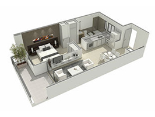
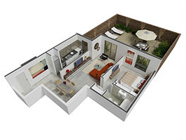

DI-ES CONSTRUCCIONES es una empresa dedicada a la construcción con experiencia de más de 25 años en la construcción de casas campestres y urbanas, caracterizándose por el compromiso de brindar al cliente un servicio integral basado en sus necesidades y expectativas, logrando la generación constante de proyectos innovadores, rentables, armónicos con el entorno con excelente calidad y amplia aceptación. De esta forma se obtiene la consolidación de una empresa eficaz, dinámica, sólida, eficiente, proactiva e innovadora y con un amplio reconocimiento en el mercado.
En DI-ES CONSTRUCCIONES desarrollamos proyectos de construcción con altos niveles de calidad. Trabajamos para que nuestros proyectos sobresalgan por sus excelentes materiales, diseño, acabados, zonas verdes y el cumplimiento en los tiempos de entrega, asegurando a nuestros clientes el beneficio de su inversión.

